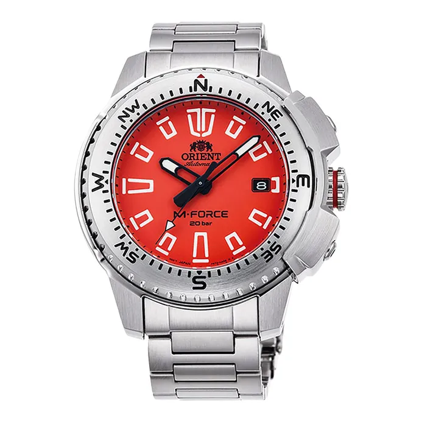

Rp 10.000.000
Orient M-Force edisi terbaru dengan dial merah menyala yang agresif dan premium. Menggunakan mesin automatic dengan durability tinggi, cocok untuk pecinta diver watch.
| Model No. | RA-AC0N02Y |
|---|---|
| Movement | Automatic (Cal. F6727) |
| Power Reserve | 40 Hours |
| Case Diameter | 45 mm |
| Case Material | Stainless Steel |
| Band | Stainless Steel Bracelet |
| Glass | Sapphire Crystal |
| Water Resistance | 200 m |
| Features | Diver’s Watch, Screw-down Crown, Date |